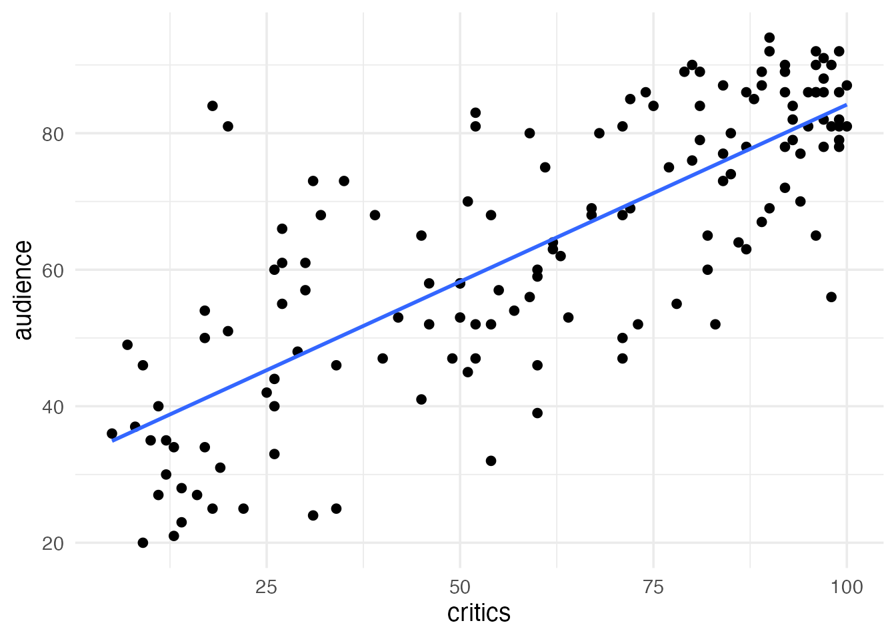
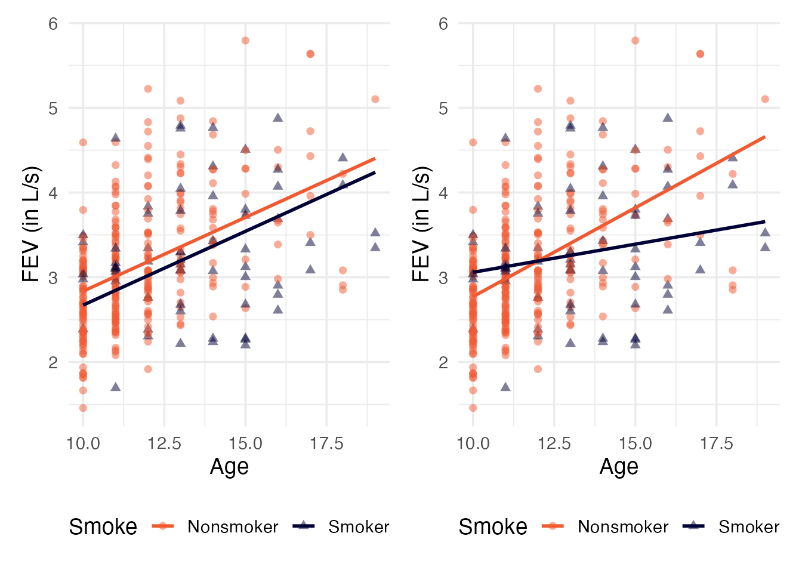
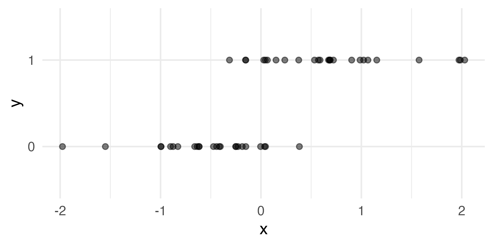
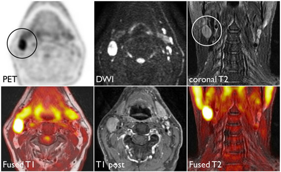
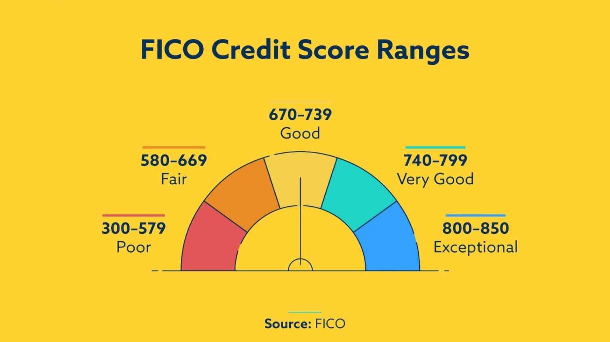
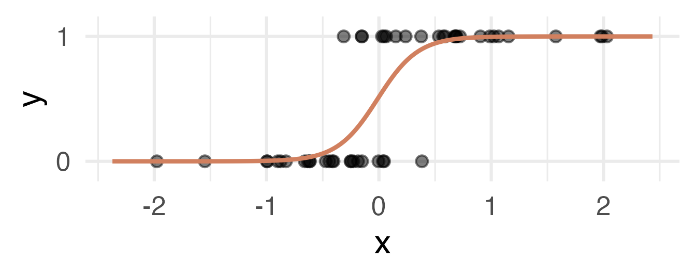

19: Odds, Odds Ratios, and Logistic Regression
Self-paced tutorial
ImportantToday’s plan
I’ve lost my voice! 🫠 Instead of a lecture, you’ll work through this tutorial with your group at your own pace. It covers the same material as the Day 19 slides and the Day 19 activity.
- Code chunks: you can use these as usual
- Check-in questions: click an answer to see whether you’re right (and why). Try to answer before you click!
- Numbered questions (Q1, Q2, …): remember write your answers in your notes.
I will wander around and be here to answer any questions you have!
Part 0: What we’ve done so far
1. SLR: Quantitative outcome and one quantitative predictor
2. MLR: Quantitative outcome with quantitative and categorical predictors:

3. Today: a binary outcome
\[ y = \begin{cases} 1 & \text{eg. Yes, Win, True, Heads, Success}\\ 0 & \text{eg. No, Lose, False, Tails, Failure} \end{cases} \]

If we can model the relationship between predictors (\(x\)) and a binary outcome (\(y\)), we can use the model to do a special kind of prediction called classification.
Example: Is the e-mail spam or not?
\[ \mathbf{x}: \text{word and character counts in an e-mail.} \]
\[ y = \begin{cases} 1 & \text{it's spam}\\ 0 & \text{it's legit} \end{cases} \]
Example: Is it cancer or not?
\[ \mathbf{x}: \text{features in a medical image.} \]

\[ y = \begin{cases} 1 & \text{it's cancer}\\ 0 & \text{it's healthy} \end{cases} \]
Example: Will they default?
\[ \mathbf{x}: \text{financial and demographic info about a loan applicant.} \]

\[ y = \begin{cases} 1 & \text{applicant is at risk of defaulting on loan}\\ 0 & \text{applicant is safe} \end{cases} \]
Modeling probabilities instead of responses
This data is hard to model! Instead of modeling \(y\) directly, we model the probability that \(y=1\):

So, our prediction questions turn into:
- “Given new email, what’s the probability that it’s spam?’’
- “Given new image, what’s the probability that it’s cancer?’’
- “Given new loan application, what’s the probability that they default?’’
Why don’t we model y directly?
Recall regression with a numerical outcome:
- Our models do not output guarantees for \(y\), they output predictions that describe behavior on average
Similar when modeling a binary outcome:
- Our models cannot directly guarantee that \(y\) will be zero or one. The correct analog to “on average” for a 0/1 outcome is “what’s the probability?”
Today, we’ll work through an example with the goal of predicting whether an article is fake news or not.
Part 1: The data
This data set has information on 150 news articles, some that are real and some that are fake. Our goal is to build a statistical model to explain type based on features of the article.
type: “real” or “fake” /type_num: 0 (real) or 1 (fake)titleandurlof articletitle_words: how many words in the titletitle_has_excl: whether title has an exclamation pointtitle_caps_percent: percent of title in capital lettersnegative: percent of words that have negative sentimentpositive: percent of words that have positive sentiment
Run the code chunk below to load the data. (Every chunk after this one needs news, so start here!)
Check-in 1
Before we model anything: what does type_num = 1 mean?
Q1. Before we do anything else, how do you think title_has_excl and title_caps_percent are related to type_num? (Write your answer down in your notes)
Part 2: Probability, odds, and odds ratios
Probability vs. odds
If \(\pi\) is the probability of an event, then the odds of the event are
\[\text{odds} = \frac{\pi}{1 - \pi} = \frac{P(\text{event})}{P(\text{not event})}\]
| Probability \(\pi\) | Odds \(\pi/(1-\pi)\) | How we’d say it |
|---|---|---|
| 0.5 | 1 | “even odds” |
| 0.75 | 3 | “3 to 1” |
| 0.2 | 0.25 | “1 to 4” |
Probabilities live between 0 and 1. Odds live between 0 and \(\infty\).
Fake news and exclamation points
Here’s a table of article type by whether the title has an exclamation point:
For titles with an exclamation point (the TRUE row):
- \(P(\text{fake} \mid \text{exclamation}) = 16/18 \approx 0.889\)
- \(\text{Odds}(\text{fake} \mid \text{exclamation}) = \dfrac{16/18}{2/18} = \dfrac{16}{2} = 8\)
Notice the shortcut: the odds are just (number fake) / (number real). You can use the chunk below as a calculator.
Check-in 2
What are the odds that an article is fake, for titles without an exclamation point?
Odds ratios
To compare the two groups, we divide their odds. This is the odds ratio (OR):
\[OR = \frac{\text{Odds}(\text{fake} \mid \text{exclamation})}{\text{Odds}(\text{fake} \mid \text{no exclamation})} = \frac{8}{0.5} = 16\]
Check-in 3
Which is the correct interpretation of OR = 16?
Q2. What would an odds ratio of exactly 1 mean in this context? What about an odds ratio less than 1?
Part 3: Why not linear regression?
Now let’s use a quantitative predictor: title_caps_percent. Here’s what happens if we fit our usual linear regression model to a 0/1 response. We’ll treat \(\hat y\) as the probability of a 1.
Check-in 4
The linear model predicts 1.17 for a title that is 43.75% capital letters (the largest value in the data). What's the problem?
Part 4: The logistic regression model
The trick is to model a version of the probability that isn’t stuck between 0 and 1: the log-odds (also called the logit).
\[\log\left(\frac{\pi(x)}{1-\pi(x)}\right) = \beta_0 + \beta_1 x_1 + \beta_2 x_2 + \cdots + \beta_p x_p\]
where \(\pi(x) = P(Y = 1 \mid x)\).
| Scale | Formula | Range |
|---|---|---|
| Probability | \(\pi\) | 0 to 1 |
| Odds | \(\dfrac{\pi}{1-\pi}\) | 0 to \(\infty\) |
| Log-odds | \(\log\left(\dfrac{\pi}{1-\pi}\right)\) | \(-\infty\) to \(\infty\) |
Because the log-odds can be any number, it’s OK for the right-hand side to be a line.
Check-in 5
In logistic regression, the response is a linear function of the predictors on which scale?
Fitting the model in R
We use glm() with family = binomial. The syntax is otherwise the same as lm().
So the fitted model is
\[\log\left(\frac{\widehat\pi(x)}{1-\widehat\pi(x)}\right) = -0.932 + 0.098 x\]
where \(x\) is title_caps_percent.
Part 5: Interpreting \(\widehat\beta_1\)
\(\widehat\beta_1 = 0.098\) is the expected change in the log-odds of being fake for a 1-unit increase in title_caps_percent. But we don’t think in log-odds! Exponentiating both sides gives the odds:
\[\widehat{\text{odds}}(x) = e^{\widehat\beta_0 + \widehat\beta_1 x} = e^{\widehat\beta_0} \, e^{\widehat\beta_1 x}\]
If \(x\) increases by 1, the odds get multiplied by
\[\frac{\widehat{\text{odds}}(x + 1)}{\widehat{\text{odds}}(x)} = \frac{e^{\widehat\beta_0} e^{\widehat\beta_1 (x+1)}}{e^{\widehat\beta_0} e^{\widehat\beta_1 x}} = e^{\widehat\beta_1}\]
So \(e^{\widehat\beta_1}\) is an odds ratio.
Check-in 6
Which is the correct interpretation of the slope?
Check-in 7
What happens to the odds of fake news if the percent of capital letters increases by 10 percentage points? (You can use the chunk above as a calculator.)
Part 6: From log-odds to probabilities
What’s the probability that an article with 20% capital letters in the title is fake? Work from the inside out:
- Log-odds: \(\widehat\eta = -0.932 + 0.098(20) \approx 1.023\)
- Odds: \(\widehat\omega = e^{\widehat\eta} = e^{1.023} \approx 2.78\)
- Probability: \(\widehat\pi = \dfrac{\widehat\omega}{1 + \widehat\omega} = \dfrac{e^{\widehat\eta}}{1 + e^{\widehat\eta}} \approx 0.736\)
Tip
To go from odds to probability: \(\pi = \dfrac{\text{odds}}{1 + \text{odds}}\). For example, odds of 3 (“3 to 1”) is a probability of \(3/4 = 0.75\).
Check-in 8
What is the estimated probability that an article with no capital letters in the title (x = 0) is fake? Edit the code above to check!
Letting R do it: predict()
predict() works for glm() models too, but be careful about the scale:
Check-in 9
The first line of output (without type = "response") is on which scale?
The fitted model on all three scales
Run the chunk below to see the same fitted model on all three scales.
Q3. Describe the shape of the fitted model on each of the three scales. Why does the probability curve flatten out near 1?
Part 7: Connecting back to odds ratios
What if the predictor is the 0/1 variable title_has_excl?
Check-in 10
Compare exp(coef(excl_glm)) to your work in Part 2. What is eβ1 = 16?
Q4. What does \(e^{\widehat\beta_0} = 0.5\) represent in context?
Part 8: Your turn
Now, fit a logistic regression model using all three variables we’ve discussed today (title_has_excl, title_caps_percent, and title_words) and report the summary().
Q5. Write out the fitted model (on the log-odds scale) for articles (A) with an exclamation point in the title and (B) without an exclamation point in the title.
Q6. Write out interpretations for all slope coefficients in the model in terms of the odds of being fake news.
Q7. Use predict() to find the estimated probability that an article with an exclamation point, 10% capital letters, and 12 words in the title is fake.
Q8. Based on what we know about OLS (ordinary least squares, which includes both SLR and MLR), which predictors appear to be most important for this model?
Q9. What questions do you have about the summary() output? (Write them down! We’ll talk about them next class.)
Function quick reference
| Function | Purpose |
|---|---|
table(x, y) |> addmargins() |
Two-way table with row and column totals |
glm(formula, data, family = binomial) |
Fit a binary logistic regression model |
coef(model), exp(coef(model)) |
Coefficients on the log-odds scale; odds ratios |
summary(model) |
View model summary and Wald tests |
predict(model, newdata) |
Predictions on the log-odds scale |
predict(model, newdata, type = "response") |
Predictions on the probability scale |